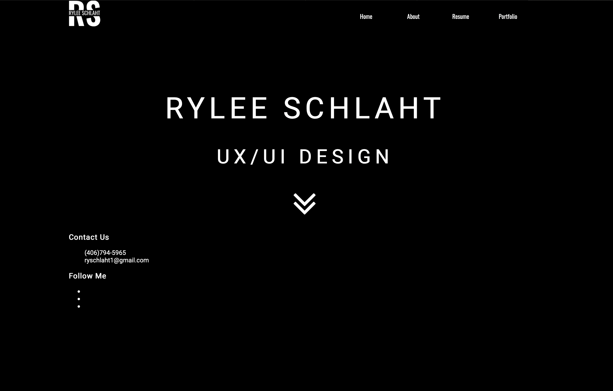
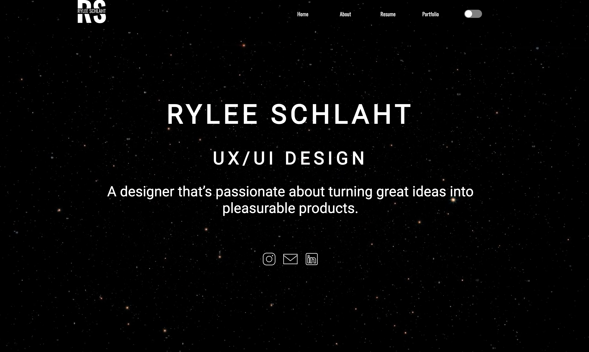
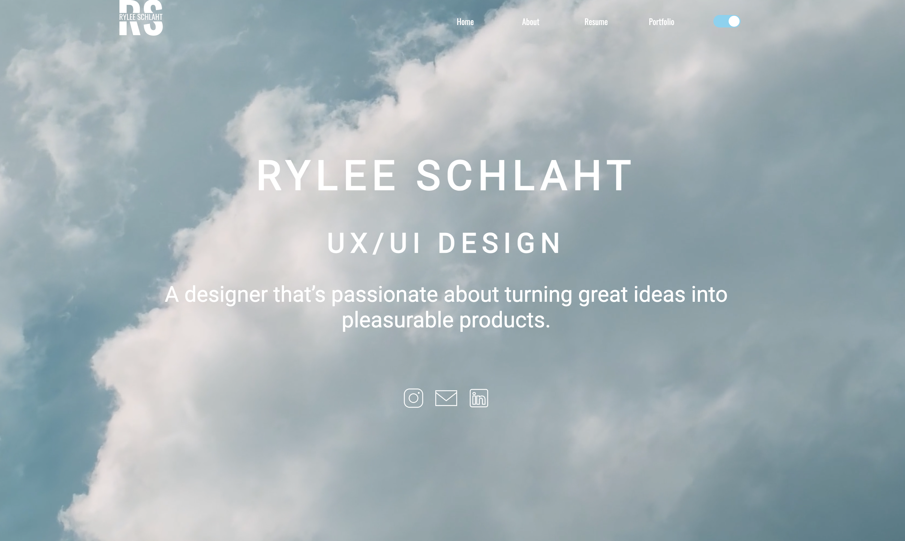

.png)



CASE STUDY ABOUT MY PORTFOLIO :)
Hey there! I’m Rylee, a designer based in Portland, Oregon, with a background in graphic design. My passion for design started in my home state of Montana, where I had the opportunity to attend a trade high school and spent most of my days studying graphic design. I fell in love with creating interactive designs that my peers found enjoyable and aesthetically pleasing. I trained one on one with an incredible designer who challenged me and pushed me to the best version of myself. Shortly after graduation I moved to Portland not knowing anyone or having any plan. Just me and my cat (Bean) against the world. I shortly found UX/UI Design and began to study UX with the University of Oregon Bootcamp. I was drawn to UX for the empathetic aspect of design. The reward of creating something I was proud of that others could enjoy is something I plan pursuing for a very long time. My time at the bootcamp has been extremely educational. I have learned problem solving skills and to come at a problem from many different angles. I’ve become fluent in iteration to deliver something terrific.